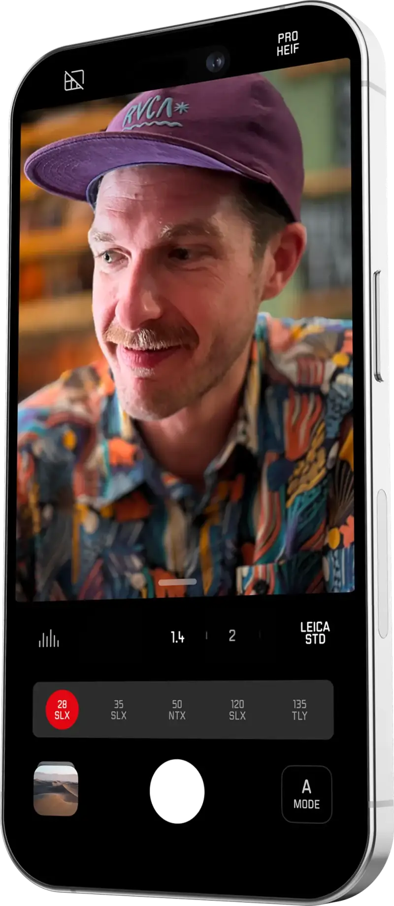
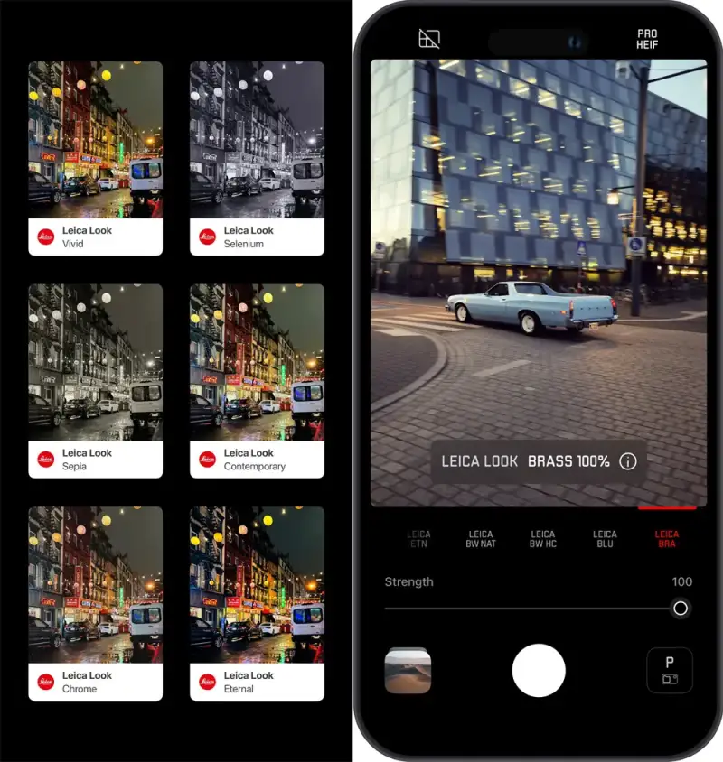
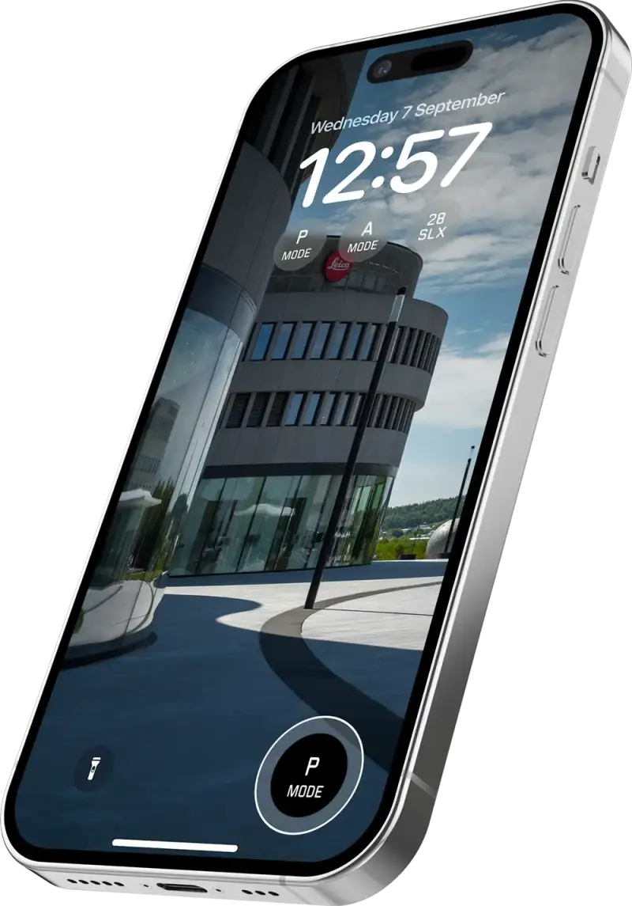

With new post-processing features and flexible creative tools, Leica LUX has become a closely watched photography app only months after launch
2024 12 16, Chinese mainland.To bring the renowned Leica photography experience to iPhone users, Leica Camera is pleased to announce an update to its innovative Leica LUX app. The new Leica LUX keeps Leica's long tradition of excellent image quality and artistic expression. It also adds powerful new features that greatly expand what mobile photographers can create.
Dr. Victor Henning is the head of the Leica LUX app and the founder and CEO of Fjorden. He said: The Leica LUX app has become the highest-rated camera app in iPhone app stores around the world. This recognition keeps our promise to bring the highest standards of Leica photography to mobile devices. It gives users professional photographic tools and creative freedom, so they can catch great moments anywhere.
The update brings breakthrough new tools and effect simulations that help photographers work on their images.
Leica filters and lens adjustments: users can now change the Leica lens simulation, aperture, focus, and Leica filter even after they take the shot. This lets photographers adjust the composition, focus, and mood of the image. It also improves the separation between the foreground and the background.

New Leica lens simulations: an iPhone with a 3x telephoto lens can now simulate a 90 mm Summilux lens. An iPhone with a 5x telephoto lens can simulate a 120 mm Summilux lens. This extends the reach of Leica's flagship lens simulations.
New Leica filters: the Leica Chrome and Leica Brass filters add more creative options. They give images a timeless film look, inspired by Leica's classic film photography.
Leica filter sliders: users can now fine-tune the strength of each Leica filter with a slider from 0 to 100. This gives maximum creative flexibility to match the photographer's own taste.

Lock screen widget: users can launch the Leica LUX app or a specific Leica lens simulation right from the iPhone lock screen. This helps photographers catch moments at once.

In 2023, Leica Camera AG expanded its mobile division by buying Fjorden Electra AS, a Norwegian startup for smartphone photography. In 2024, the two companies developed and released the first iPhone app, Leica LUX. The app brings iconic Leica filters and a professional photography experience to mobile users worldwide.
Leica Camera: Going With Photography
Leica Camera is an international company that makes high-end cameras and sports optics. Its lasting quality, German craftsmanship, industrial design, and constant innovation have built its century-long legend. As a core part of its brand culture, Leica runs many programs to promote the art of photography. Besides Leica Galleries and Leica Academies around the world, Leica set up the Leica Hall of Fame Award and the Leica Oskar Barnack Award (LOBA). The LOBA is seen as one of the most innovative sponsorship awards today. Leica Camera is based in Wetzlar, in the German state of Hesse. It has another production site in Vila Nova de Famalicão, Portugal. Its branch offices and Leica retail stores span the globe.